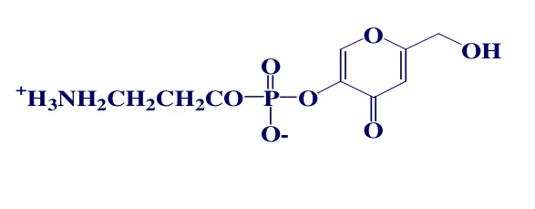
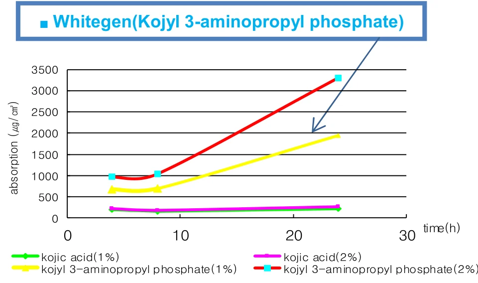
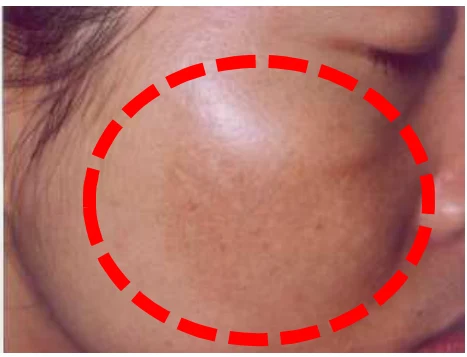
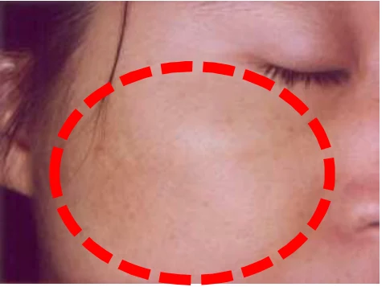
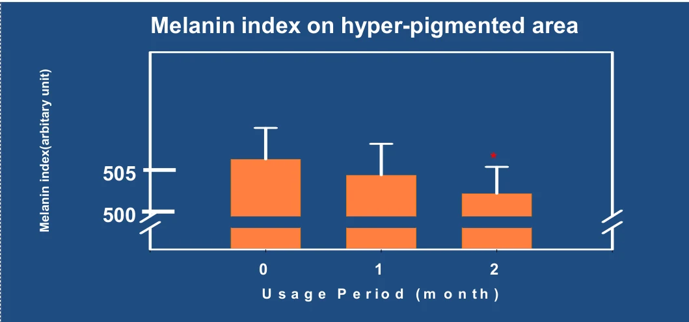

HOME
HOME- 원료소개
- 화장품원료
- Whitegen
Ingredient research
Whitegen
안정화된 코직산 유도체
01 / Overview & Strengths
개요 & 특장점
- 코직산 유도체 이며 피부를 전체적으로 밝게 만들어주는 미백 원료 입니다.
- 피부 미백제인 ‘코직산(Kojic acid)’은 공기에 산화되면 안정도가 깨지고 색이 변하기 쉬운 단점이 있는데, 당사에서는 이를 3-APPA 결합으로 안정화 시켜 화장품에 적용이 용이하게끔 만들었습니다.
※ 자세한 자료는 직접 문의 부탁드립니다.
Product features / Product Strengths
- 미백 효과
- 항산화 효과
- 항균 효과
02 / Technical Information
기술 자료
원료 기본 규격 및 제품 카탈로그
- INCI Name
- Aminopropyl Kojyl Phosphate
- CAS No.
- 472965-63-2
- M.O.Q.
- 1KG
- Pack Size
- 1KG
- Appearance
- Powder
- Dosage
- Min. 0.5~2%
03 / Research Data
기타 데이터
Introduction
- 미백을 위한 안정화된 코지산 유도체(Stabilized Kojic acid derivative)입니다.
- 코지산과 3-아미노프로필 인산의 축합 반응으로 얻은 Aminopropyl Kojyl Phosphate입니다.
- 안전하고 효과적인 미백 원료입니다.
- 색소 침착을 없애는 작용이 강합니다.

Advantages of Whitegen
- High stability수용액에서 30일 동안 90% 이상의 안정성을 유지합니다.
- Skin Permeability코지산 단독보다 10배 이상 높은 투과성을 보입니다.
- Action mechanism코지산과 3-아미노프로필 인산의 반응이 피부 속 침투를 돕습니다.

시간에 따른 피부 흡수량 : 코지산(1% · 2%) 대비 Kojyl 3-aminopropyl phosphate(1% · 2%)
Before
→2 months

After

대상 : 심한 색소 침착이 있는 건강한 여성 30명 (평균 42.5세) · 기간 : 2개월
시료 : 2% Kojyl-APPA 로션 · Mexameter 평가 (서울대학교 피부과)

사용 기간(0 · 1 · 2개월)에 따른 멜라닌 지수 변화
원료 품질 시험 항목 및 기준
- Appearance
- White powder
- pH (1→100)
- 4.0 ~ 6.0
- Solubility
- Water Soluble
- Dosage
- 0.5 ~ 2%
- Application
- Skincare · Body care